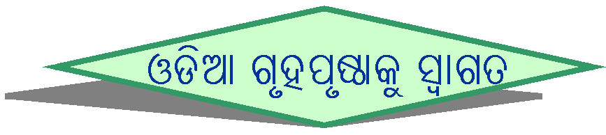
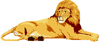
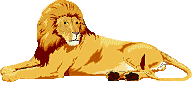
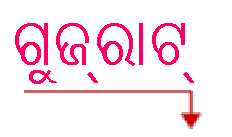
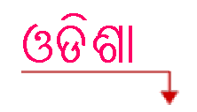

|  |
 |
 |

|
HEARTBREAKING NEWS |



| WHAT'S NEW? |
|---|
| This Page Has Been Accessed | Times Since |
|---|
was last updated on :
Your suggestions are always welcome
Debasmita Misra And Ahimanikya Satpathy Read Our Guest Book/ Sign Our Guest Book